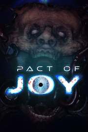

Pact of Joy
Detalles
|  | |
| Tiempo de juego | No Jugado |
| Última actividad | Nunca |
| Añadido | 11/13/2024 0:35:38 |
| Modificado | 11/13/2024 1:09:45 |
| Estado de finalización | No Jugado |
| Librería | Playnite |
| Fuente | PORCHE |
| Plataforma | PC (Windows) |
| Fecha de lanzamiento | |
| Puntuación de la Comunidad | 74 |
| Puntuación de la Crítica | |
| Puntuación de usuario | |
| Género | Aventura Indie |
| Desarrollador | Just Sauce Studio |
| Editor | Just Sauce Studio |
| Característica | Logros De Préstamo Familiar Un Jugador |
| Enlaces | Punto de encuentro Discusiones Guías Noticias Página de la tienda PCGamingWiki Logros |
| Tag | 3D Ambientales Aventura Buena trama Ciencia ficción Comedia Emocionales Exploración Futuristas Historia alternativa Investigación Misterio Mitos y leyendas Primera persona Sigilo Simulador de caminar Subacuáticos Suspense Terror Terror psicológico |
Descripción
Setting:
Set in the same world as Test of Courage and Born Into Fear, you’ll assume the role of Victor Cortes as you investigate the signs of a potential Buffer at the abandoned, underwater Aegis facility, Phorcys Station. There’s much more going on than meets the eye. Your organization has heard rumors that a cult-like group has moved into the installation. If you want to succeed in your mission of finding, Lila, you’ll need to search for the Buffer and uncover the secrets of the Children of Joy.
Gameplay:


Features:
- Stealth elements: Stay in the shadows to hide from the guardians of Phorcys Station.
- Inventory System: Collect items that may later help you in your quest.
- Variety of characters: Speak to various NPC's and avoid the failed experiments of Phorcys Station.
- Randomized solutions: Each console will have a different solution for every playthrough.
- Drone Companion: A Drone will serve as your flashlight and can highlight interactable objects using Enlightened Vision. It’ll also speak to you at times.
Can you bring the Children of Joy the peace they seek? Or will you abandon them?
Set in the same world as Test of Courage and Born Into Fear, you’ll assume the role of Victor Cortes as you investigate the signs of a potential Buffer at the abandoned, underwater Aegis facility, Phorcys Station. There’s much more going on than meets the eye. Your organization has heard rumors that a cult-like group has moved into the installation. If you want to succeed in your mission of finding, Lila, you’ll need to search for the Buffer and uncover the secrets of the Children of Joy.
Gameplay:
Terrifying threats and a chilling story await you in the claustrophobic depths of Phorcys Station. Step softly while you explore its haunted halls and solve its mysteries or risk the wrath of its guardians.
Repair control panels to restore access to locations around Phorcys Station.
Meet some of the former souls that lived in Phorcys Station and hear what they have to say.
Learn about the past lives of the Children of Joy through their personal computer terminals.
Features:
- Stealth elements: Stay in the shadows to hide from the guardians of Phorcys Station.
- Inventory System: Collect items that may later help you in your quest.
- Variety of characters: Speak to various NPC's and avoid the failed experiments of Phorcys Station.
- Randomized solutions: Each console will have a different solution for every playthrough.
- Drone Companion: A Drone will serve as your flashlight and can highlight interactable objects using Enlightened Vision. It’ll also speak to you at times.
Can you bring the Children of Joy the peace they seek? Or will you abandon them?